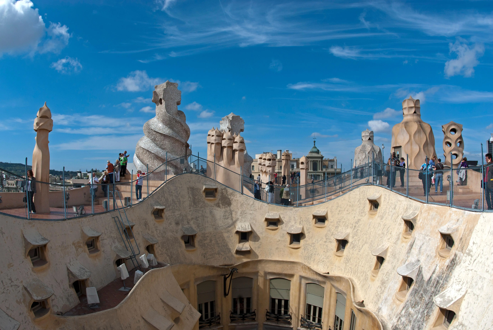
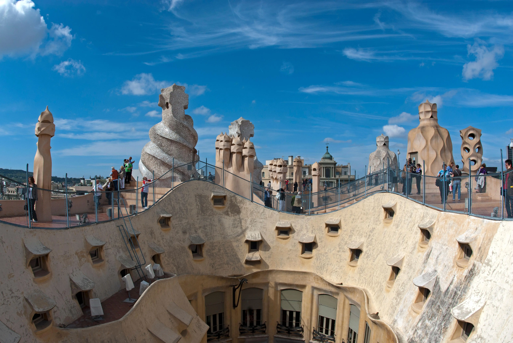
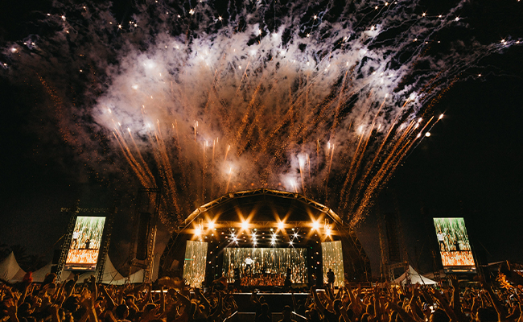
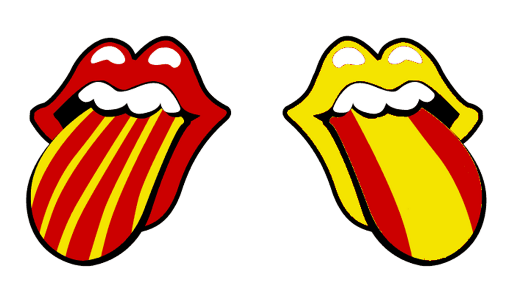
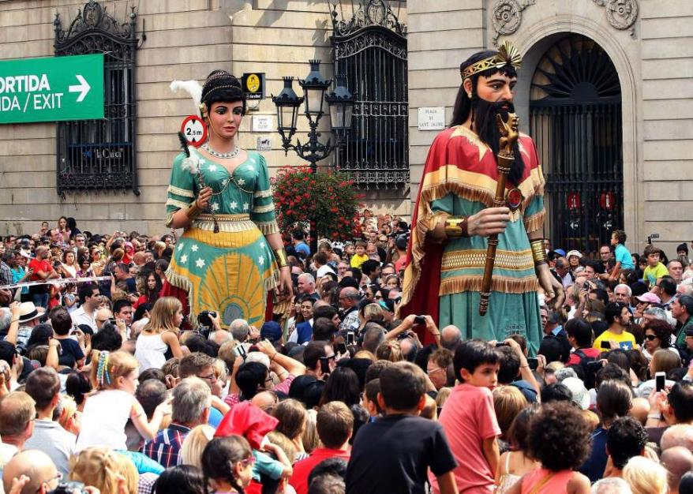
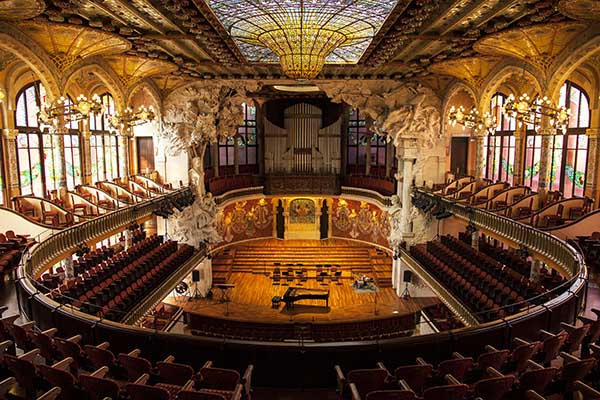

Arquitectura
Barcelona es famosa por sus joyas arquitectónicas. Desde los impresionantes templos góticos hasta las creaciones modernistas de Gaudí, la ciudad alberga una variedad de estilos arquitectónicos que cuentan su historia y evolución.
Barcelona es famosa por sus joyas arquitectónicas. Desde los impresionantes templos góticos hasta las creaciones modernistas de Gaudí, la ciudad alberga una variedad de estilos arquitectónicos que cuentan su historia y evolución.
El Institut de Cultura de Barcelona organiza una amplia gama de actividades y eventos para todas las edades. Puedes disfrutar de cine, espectáculos, literatura, música, artes escénicas, museos y más. Además, el Centro de Cultura Contemporánea de Barcelona ofrece exposiciones y eventos centrados en la ciudad y la cultura urbana
A pesar de tener dos idiomas cooficiales (catalán y español), Barcelona es un lugar excelente para aprender español. La diversidad lingüística refleja la riqueza cultural de la ciuda
Barcelona celebra numerosas festividades a lo largo del año. Por ejemplo, las Fiestas de Santa Eulalia ofrecen una programación variada, y el Festival de Novela Negra de Barcelona (BCNegra) atrae a amantes del género negro
La ciudad alberga una escena artística y musical vibrante. Desde galerías de arte hasta conciertos en vivo, siempre hay algo que ver y escuchar en Barcelona.
